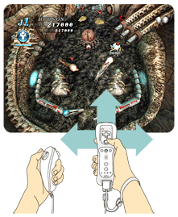
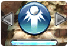
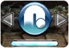

11 |
Règles et techniques |
 |
● Flipper
● MULTI BALL
● EXTRA BALL
Balancez rapidement la télécommande Wii pour secouer la machine et changer légèrement la trajectoire de la bille. Vous pouvez secouer dans trois directions. Vers l'avant, la droite ou la gauche.
Cependant, si vous secouez trop brutalement la machine, celle-ci fera "TILT" et vous ne pourrez plus contrôler la bille jusqu'à ce qu'elle soit perdue.
Une ACTION BALL vous permet d'activer une action spéciale avec la bille en appuyant sur
Au début de la partie, vous ne pouvez utiliser que la bille turbo. En remplissant certaines conditions, vous obtenez d'autres ACTION BALL.

Bille turbo
Votre bille accélère, ce qui cause davantage de dégâts aux ennemis.

Bille inverse
Inverse la direction de votre bille.  Bille double
Bille doubleDivise votre bille en 2. La nouvelle bille disparaît après un certain temps.
* Vous ne pouvez pas activer plusieurs ACTION BALL à la fois. De plus, la jauge affichée en bas de l'écran doit être pleine avant de pouvoir activer une ACTION BALL.
|
 |
 |
 |